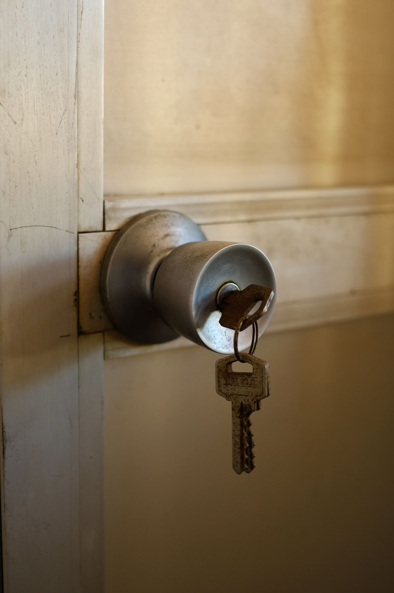
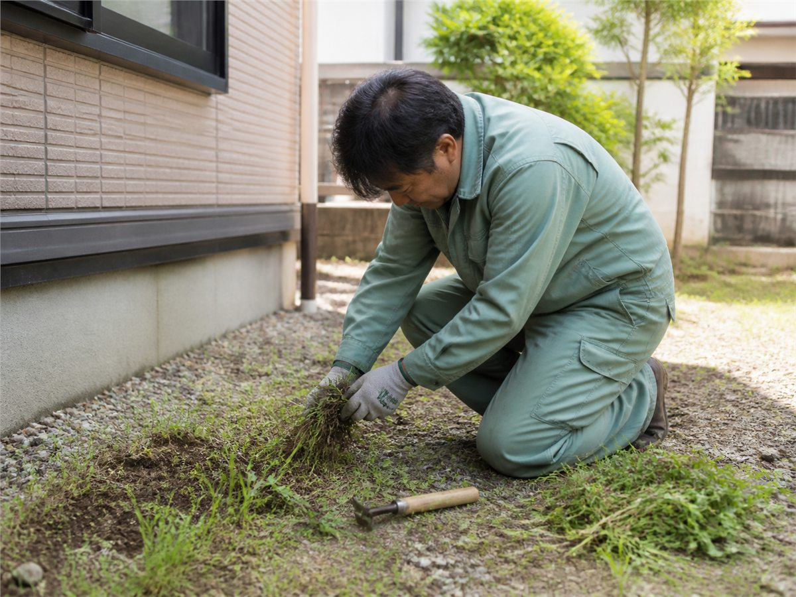

玄関の鍵開錠
玄関の鍵が開かない時は、状況と本人確認書類を確認して対応可否をご案内します。

周南市の鍵開錠・暮らしサポート
鍵をなくした、鍵穴に異物が入った、玄関の鍵が開かない、ドアノブを交換したいなど、鍵まわりの困りごとも内容を確認して対応可否と料金をご案内します。


できるか分からない時も
「鍵をなくした」「鍵穴に異物が入った」「玄関の鍵が開かない」「ドアノブが古くて交換したい」という段階でもご相談ください。写真があれば、作業内容を判断しやすくなります。
お客様の声
実際にいただいたお声を、個人が特定されないよう短く要約しています。
「鍵をなくして家に入れないと思っていましたが、来てすぐ開けてもらえて助かりました。」
鍵開錠をご依頼のお客様「素早い対応で、本当に助かりました。」
鍵まわりのご相談をいただいたお客様基本料金
簡単な作業の入口料金です。作業時間・人数・部材・出張地域により変わります。
出張対応
表示は税込の出張料金です。作業料金・部材代とは別にかかります。9,000円の遠方エリアは高速料金を含みます。掲載外の地域も、まずはご相談ください。
ほかにも対応しています
予約・相談
鍵開錠、鍵紛失、ドアノブ交換、荷物移動など、内容を整理して公式LINEへ送れる相談フォームをご用意しています。